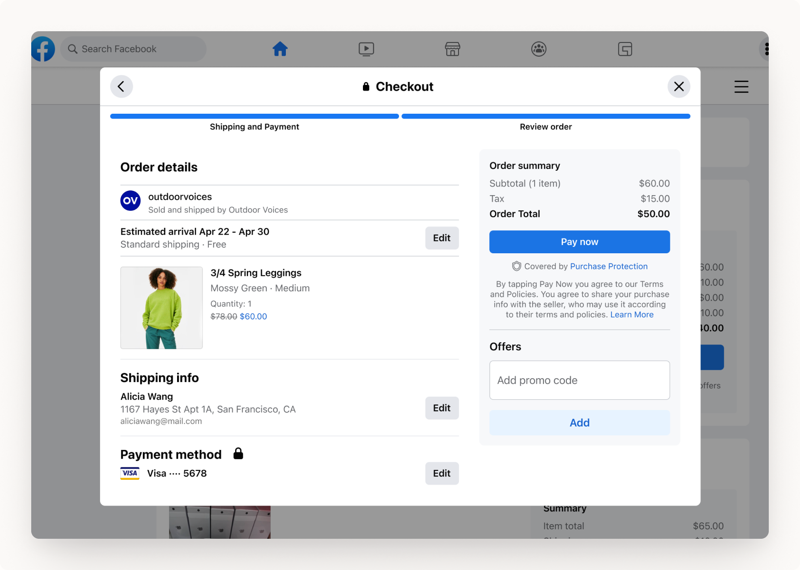
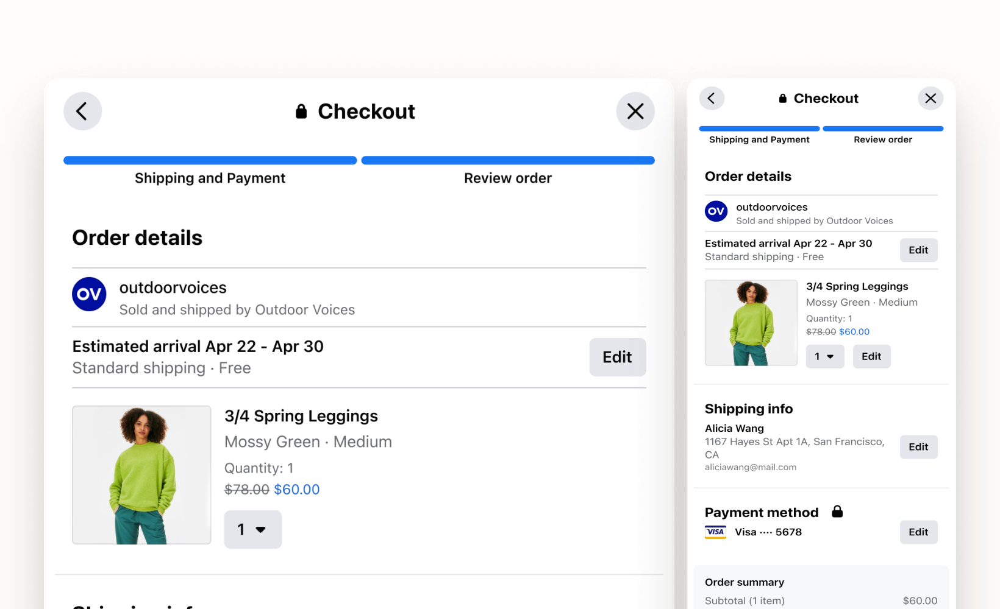

On the Checkout team at Meta, I led a redesign of Facebook’s global web checkout that exceeded goal metrics and led to better cross-org collaboration.

A redesign that brought the web experience on par with the apps, consistent and familiar with thoughtful, platform-specific deviations.

One responsive framework for the entire web shopping journey.
Beyond the experience, I created an easy-to-use, extensive product system, open to all teams, aligned with the Facebook Design System and the apps.